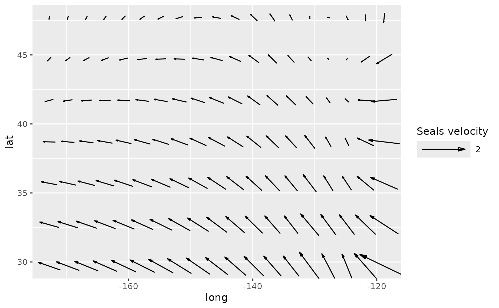
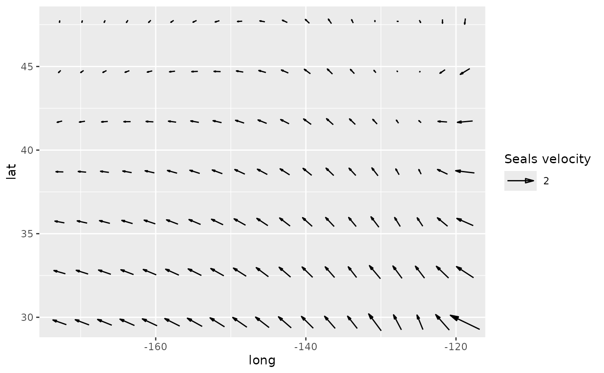

Allows to control the size of the arrows in geom_arrow. Highly experimental.
scale_mag(name = waiver(), labels = waiver(), max_size = 1, default_unit = "cm", max = waiver(), guide = guide_vector(), ...)
Arguments
| name | The name of the scale. Used as the axis or legend title. If
|
|---|---|
| labels | One of:
|
| max_size | size of the arrow in centimeters |
| default_unit | ignored |
| max | magnitude of the reference arrow in data units. Will be the
maximum value if |
| guide | type of legend |
| ... | Other arguments passed on to |
Examples
library(ggplot2) g <- ggplot(seals, aes(long, lat)) + geom_vector(aes(dx = delta_long, dy = delta_lat), skip = 2) g + scale_mag("Seals velocity")g + scale_mag("Seals velocity", max = 1)g + scale_mag("Seals velocity", max_size = 2)g + scale_mag("Seals velocity", default_unit = "mm")